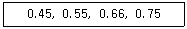
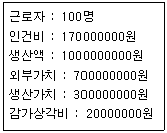

제빵기능사 (2010-03-28 기출문제)
1과목: 제조이론
1. 제과 제품을 평가하는데 있어 외부 특성에 해당하지 않는 것은?
- 부피
- 껍질색
- 기공
- 균형
(정답률: 77%)

2. 일반적으로 옐로 레이어 케이크의 반죽온도는 어느 정도가 가장 적당한가?
- 10˚C
- 16˚C
- 24˚C
- 34˚C
(정답률: 80%)
3. 이탈리안 머랭에 대한 설명 중 틀린 것은?
- 흰자를 거품으로 치대어 30% 정도의 거품을 만들고 설탕을 넣으면서 50% 정도의 머랭을 만든다.
- 흰자가 신선해야 거품이 튼튼하게 나온다.
- 뜨거운 시럽에 머랭을 한꺼번에 넣고 거품을 올린다.
- 강한 불에 구워 착색하는 제품을 만드는데 알맞다.
(정답률: 67%)
4. 다음 중 파운드케이크의 윗면이 자연적으로 터지는 원인이 아닌 것은?
- 반죽 내에 수분이 불충분한 경우
- 설탕입자가 용해되지 않고 남아있는 경우
- 팬닝 후 장시간 방치하여 표피가 말랐을 경우
- 오븐 온도가 낮아 껍질 형성이 늦은 경우
(정답률: 59%)
5. 에클레어는 어떤 종류의 반죽으로 만드는가?
- 스펀지 반죽
- 슈 반죽
- 비스킷 반죽
- 파이 반죽
(정답률: 61%)
6. 다음 중 파이 껍질의 결점이 원인이 아닌 것은?
- 강한 밀가루를 사용하거나 과도한 밀어펴기를 하는 경우
- 많은 파지를 사용하거나 불충분한 휴지를 하는 경우
- 적절한 밀가루와 유지를 혼합하여 파지를 사용하지 않은 경우
- 껍질에 구멍을 뚫지 않거나 계란 물칠을 너무 많이 한 경우
(정답률: 50%)
7. 어떤 한 종류의 케이크를 만들기 위하여 믹싱을 끝내고 비중을 측정한 결과가 다음과 같을 때, 구운 후 기공이 조밀하고 부피가 가장 작아지는 비중의 수치는?

- 0.45
- 0.55
- 0.66
- 0.75
(정답률: 65%)
8. 다음 중 우유에 관한 설명이 아닌 것은?
- 우유에 함유된 주 단백질은 카제인 이다.
- 연유나 생크림은 농축우유의 일종이다.
- 전지분유는 우유 중의 수분을 증발시키고 고형질 함량을 높인 것이다.
- 우유 교반시 비중의 차이로 지방입자가 뭉쳐 크림이 된다.
(정답률: 50%)
9. 도넛의 튀김 기름이 갖추어야 할 조건은?
- 산패취가 없다.
- 저장 중 안정성이 낮다.
- 발연점이 낮다.
- 산화와 가수분해가 쉽게 일어난다.
(정답률: 68%)
10. 유화제를 사용하는 목적이 아닌 것은?
- 물과 기름이 잘 혼합되게 한다.
- 빵이나 케익을 부드럽게 한다.
- 빵이나 케익이 노화되는 것을 지연시킬 수 있다.
- 달콤한 맛이 나게 하는데 사용한다.
(정답률: 80%)
11. 핑커 쿠키 성형방법으로 옳지 않은 것은?
- 원형 깍지를 이용하여 일정한 간격으로 짠다.
- 철판에 기름을 바르고 짠다.
- 5∼6cm 정도의 길이로 짠다.
- 짠 뒤에 윗면에 고르게 설탕을 뿌려준다.
(정답률: 66%)
12. 파운드 케이크의 팬닝은 틀 높이의 몇 % 정도까지 반죽을 채우는 것이 가장 적당한가?
- 50%
- 70%
- 90%
- 100%
(정답률: 81%)
13. 아이싱에 사용되는 재료 중 다른 세 가지와 조성이 다른 것은?
- 이탈리안 머랭
- 퐁당
- 버터크림
- 스위스 머랭
(정답률: 67%)
14. 생산부서의 지난달 원가관련 자료가 아래와 같을 때 생산가치율은 얼마인가?

- 25%
- 30%
- 35%
- 40%
(정답률: 52%)
15. 케이크에서 설탕의 역할과 거리가 먼 것은?
- 감미를 준다.
- 껍질색을 진하게 한다.
- 수분 보유력이 있어 노화가 지연된다.
- 제품의 형태를 유지시킨다.
(정답률: 65%)
16. 어린 생지로 만든 제품의 특성이 아닌 것은?
- 부피가 적다.
- 속결이 거칠다.
- 빵 속 색깔이 희다.
- 모서리가 예리하다.
(정답률: 53%)
17. 원가에 대한 설명 중 틀린 것은?
- 기초원가는 직접 노무비, 직접 재료비를 말한다.
- 직접원가는 기초원가에 직접 경비를 더한 것이다.
- 제조원가는 간접비를 포함한 것으로 보통 제품의 원가라고 한다.
- 총원가는 제조원가에서 판매비용을 뺀 것이다.
(정답률: 64%)
18. 빵의 팬닝(팬 넣기)에 있어 팬의 온도로 가장 적합한 것은?
- 0~5˚C
- 20~24˚C
- 30~35˚C
- 60˚C 이상
(정답률: 76%)
19. 유지가 층상구조를 이루는 파이, 크로와상, 데니시 페이스트리 등의 제품은 유지의 어떤 성질을 이용한 것인가?
- 쇼트닝성
- 가소성
- 안정성
- 크림성
(정답률: 60%)
20. 냉동반죽법에서 반죽의 냉동온도와 저장온도의 범위로 가장 적합한 것은?
- -5˚C, 0~4˚C
- -20˚C, -18~0˚C
- -40˚C, -25~-18˚C
- -80˚C, -18~0˚C
(정답률: 60%)
2과목: 재료과학
21. 빵의 관능적 평가법에서 내부적 특성을 평가하는 항복이 아닌 것은?
- 기공(grain)
- 조직(texture)
- 속 색상(crumb color)
- 입안에서의 감촉(mouth feel)
(정답률: 76%)
22. 식빵 반죽의 제조공정에서 사용하지 않는 기계는?
- 분할기(divider)
- 라운더(rounder)
- 성형기(moulder)
- 데포지터(depositor)
(정답률: 76%)
23. 믹서의 종류에 속하지 않는 것은?
- 수직 믹서
- 스파이럴 믹서
- 수평 믹서
- 원형 믹서
(정답률: 60%)
24. 냉동 반죽법의 냉동과 해동 방법으로 옳은 것은?
- 급속냉동, 급속해동
- 급속냉동, 완만해동
- 완만해동, 급속해동
- 완만냉동, 완만해동
(정답률: 84%)
25. 스트레이트법에 의해 식빵을 만들 경우 밀가루 온도 22˚C, 실내온도 26˚C, 수도물온도 17˚C, 결과온도 30˚C, 희망온도 27˚C, 사용물량 1000g이면 얼음 사용량은 약 얼마인가?
- 98g
- 93g
- 88g
- 83g
(정답률: 48%)
26. 튀김기름의 질을 저하시키는 요인이 아닌 것은
- 가열
- 공기
- 물
- 토코페롤
(정답률: 74%)
27. 빵 제조시 발효공정의 직접적인 목적이 아닌 것은?
- 탄산가스의 발생으로 팽창작용을 한다.
- 유기산, 알코올 등을 생성시켜 빵 고유의 향을 발달시킨다.
- 글루텐을 발전, 숙성시켜 가스의 포집과 보유능력을 증대시킨다.
- 발효성 탄수화물의 공급으로 이스트 세포수를 증가시킨다.
(정답률: 52%)
28. 정통 불란서빵을 제조할 때 2차 발효실의 상대습도로 가장 적합한 것은?
- 75~80%
- 85~88%
- 90~94%
- 95~99%
(정답률: 70%)
29. 빵의 포장온도로 가장 적합한 것은?
- 15~20˚C
- 25~30˚C
- 35~40˚C
- 45~50˚C
(정답률: 80%)
30. 식빵의 밑이 움푹 패이는 원인이 아닌 것은?
- 2차 발효실의 습도가 높을 때
- 팬의 바닥에 수분이 있을 때
- 오븐 바닥열이 약할 때
- 팬에 기름칠을 하지 않을 때
(정답률: 41%)
3과목: 영양학
31. 잎을 건조시켜 만든 향신료는?
- 계피
- 넛메그
- 메이스
- 오레가노
(정답률: 77%)
32. 제분 직후의 숙성하지 않은 밀가루에 대한 설명으로 틀린 것은?
- 밀가루의 pH는 6.1~6.2정도이다.
- 효소 작용이 활발하다.
- 밀가루 내의 지용성 색소인 크산토필 때문에 노란색을 띤다.
- 효소류의 작용으로 환원성 물질이 산화되어 반죽 글루텐의 파괴를 막아준다.
(정답률: 39%)
33. 제빵에 사용하는 물로 가장 적합한 형태는?
- 아경수
- 알칼리수
- 증류수
- 염수
(정답률: 83%)
34. 유지의 분해산물인 글리세린에 대한 설명으로 틀린 것은?
- 자당보다 감미가 크다.
- 향미제의 용매로 식품의 색택을 좋게 하는 독성이 없는 극소수 용매 중의 하나이다.
- 보습성이 뛰어나 빵류, 케이크류, 소프트 쿠키류의 저장성을 연장시킨다.
- 물-기름의 유탁액에 대한 안정 기능이 있다.
(정답률: 62%)
35. 초콜릿의 팻 블룸(fat bloom) 현상에 대한 설명으로 틀린 것은?
- 초콜릿 제조 시 온도 조절이 부적합 할 때 생기는 현상이다.
- 초콜릿 표면에 수분이 응축하며 나타나는 현상이다.
- 보관 중 온도관리가 나쁜 경우 발생되는 현상이다.
- 초콜릿의 균열을 통해서 표면에 침출하는 현상이다.
(정답률: 44%)
36. 밀가루 반죽이 일정한 점도에 도달하는데 요하는 흡수율과 반죽특성을 측정하는 기계는?
- 패리노그래프(Farinograph)
- 아밀로그래프(Amylograph)
- 믹소그래프(Mixograph)
- 익스텐소그래프(Extensograph)
(정답률: 54%)
37. 호밀빵 제조시 호밀을 사용하는 이유 및 기능과 거리가 먼 것은?
- 독특한 맛 부여
- 조직의 특성 부여
- 색상 향상
- 구조력 향상
(정답률: 58%)
38. 이스트의 3대 기능과 가장 거리가 먼 것은?
- 팽창 작용
- 향 개발
- 반죽 발전
- 저장성 증가
(정답률: 58%)
39. 흰자를 사용하는 제품에 주석산 크림이나 식초를 첨가하는 이유로 적합하지 않은 것은?
- 알칼리성의 흰자를 중화함.
- pH를 낮춤으로 흰자를 강력하게 함.
- 풍미를 좋게 함.
- 색깔을 희게 함.
(정답률: 50%)
40. 다음 중 향신료가 아닌 것은?
- 카다몬
- 오스파이스
- 카라야검
- 시너몬
(정답률: 67%)
41. 아밀로오스(amylose)의 특징이 아닌 것은?
- 일반 곡물 전분 속에 약 17~28% 존재한다.
- 비교적 적은 분자량을 가졌다.
- 퇴화의 경향이 적다.
- 요오드 용액에 청색 반응을 일으킨다.
(정답률: 52%)
42. 제과 · 제빵에서 유지의 기능이 아닌 것은?
- 흡수율 증가
- 연화 작용
- 공기 포집
- 보존성 향상
(정답률: 41%)
43. 글루텐 형성의 주요 성분으로 탄력성을 갖는 단백질은 다음 중 어느 것인가?
- 알부민
- 글로불린
- 글루테닌
- 글리아딘
(정답률: 79%)
44. 다음 중 연질 치즈로 곰팡이와 세균으로 숙성시킨 치즈는?
- 크림 (cream) 치즈
- 로마노 (romano) 치즈
- 파머산 (parmesan) 치즈
- 카망베르 (camembert) 치즈
(정답률: 75%)
45. 다음 중 전화당에 대한 설명으로 틀린 것은?
- 전화당의 상대적 감미도는 80 정도 이다.
- 수분 보유력이 높아 신선도를 유지한다.
- 포도당과 과당이 동량으로 혼합되어 있는 혼합물이다.
- 케이크와 쿠키의 저장성을 연장시킨다.
(정답률: 55%)
46. 효소를 구성하는 주요 구성 물질은?
- 탄수화물
- 지질
- 단백질
- 비타민
(정답률: 67%)
47. 무기질에 대한 설명으로 틀린 것은?
- 황(S)은 당질 대사에 중요하면 혈액을 알칼리성으로 유지시킨다.
- 칼슘(Ca)은 주로 골격과 치아를 구성하고 혈액응고 작용을 돕는다.
- 나트륨(Na)은 주로 세포 외액에 들어있고 삼투압 유지에 관여한다.
- 요오드(I)는 갑상선 호르몬의 주성분으로 결핍되면 갑상선종을 일으킨다.
(정답률: 68%)
48. 다음 중 단당류가 아닌 것은?
- 포도당
- 올리고당
- 과당
- 갈락토오스
(정답률: 71%)
49. 동물성 지방을 과다 섭취하였을 때 발생할 가능성이 높아지는 질병은?
- 신장병
- 골다공증
- 부종
- 동맥경화증
(정답률: 77%)
50. 다음 중 필수 아미노산이 아닌 것은?
- 트레오닌
- 메티오닌
- 글루타민
- 트립토판
(정답률: 55%)
4과목: 식품위생학
51. 호염성 세균으로서 어패류를 통화여 가장 많이 발생하는 식중독은?
- 살모넬라 식중독
- 장염비브리오 식중독
- 병원성 대장균 식중독
- 포도상구균 식중독
(정답률: 77%)
52. 발효가 부패와 다른 점은?
- 미생물이 작용한다.
- 생산물을 식용으로 한다.
- 단백질의 변화반응이다.
- 성분의 변화가 일어난다.
(정답률: 61%)
53. 다음 중 감염형 식중독 세균이 아닌 것은?
- 살모넬라균
- 장염 비브리오균
- 황색포도상구균
- 캠필로박터균
(정답률: 52%)
54. 다음 중 동종간의 접촉에 의한 전염병이 없는 것은?
- 세균성이질
- 조류독감
- 광우병
- 구제역
(정답률: 55%)
55. 다음 중 식품위생법에서 정하는 식품접객업에 속하지 않는 것은?
- 식품소분업
- 유흥주점
- 제과점
- 휴게음식점
(정답률: 68%)
56. 전염병 발생의 3대 요인이 아닌 것은?
- 전염원
- 전염경로
- 성별
- 숙주 감수성
(정답률: 79%)
57. 다음 중 이형제의 용도는?
- 가수분해에 사용된 산제의 중화제로 사용된다.
- 제과/제빵을 구울 때 형틀에서 제품의 분리를 용이 하게 한다.
- 거품을 소멸 · 억제하기 위해 사용하는 첨가물이다.
- 원료가 덩어리지는 것을 방지하기 위해 사용한다.
(정답률: 73%)
58. 유지가 산패되는 경우가 아닌 것은?
- 실온에 가까운 온도 범위에서 온도를 상승시킬 때
- 햇빛이 잘 드는 곳에 보관할 때
- 토코페롤을 첨가할 때
- 수분이 많은 식품을 넣고 튀길 때
(정답률: 67%)
59. 식품 등을 통해 전염되는 경구전염병의 특징이 아닌 것은?
- 원인 미생물은 세균, 바이러스 등이다.
- 미량의 균량에서도 감염을 일으킨다.
- 2차 감염이 빈번하게 일어난다.
- 화학물질이 주요 원인이 된다.
(정답률: 63%)
60. 다음 세균성 식중독 중 일반적으로 치사율이 가장 높은 것은?
- 살모넬라균에 의한 식중독
- 보툴리누스균에 의한 식중독
- 장염 비브리오균에 의한 식중독
- 포도상구균에 의한 식중독
(정답률: 58%)